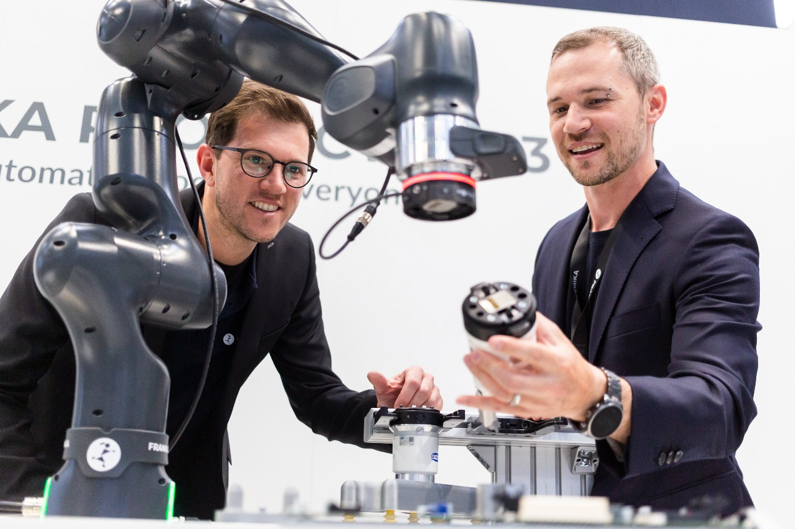

A Feira Tecnológica Escolar reuniu estudantes de diferentes turmas para apresentar projetos inovadores desenvolvidos ao longo do semestre. Entre as atrações estavam robôs, aplicativos, maquetes inteligentes, sistemas de automação e soluções voltadas à sustentabilidade. O evento proporcionou a troca de conhecimentos, estimulou a criatividade, o trabalho em equipe e o pensamento crítico, além de aproximar a comunidade escolar do universo da ciência e da tecnologia. A iniciativa demonstrou como a educação pode incentivar a inovação e preparar os alunos para os desafios do futuro de forma prática, dinâmica e colaborativa.
O conhecimento transforma ideias em realidade, e a inovação começa com a coragem de aprender e criar🗿.
